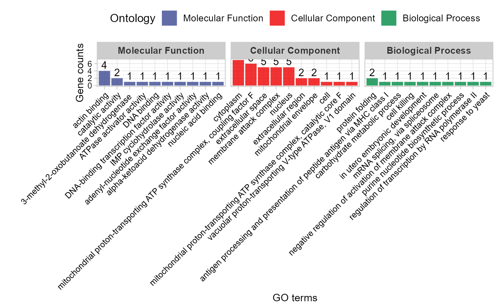
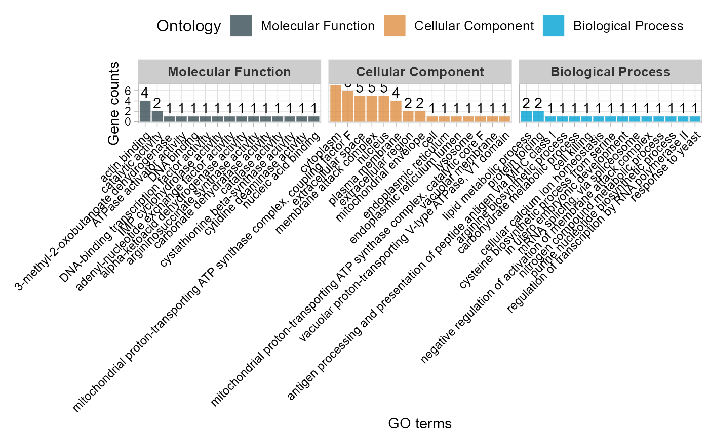
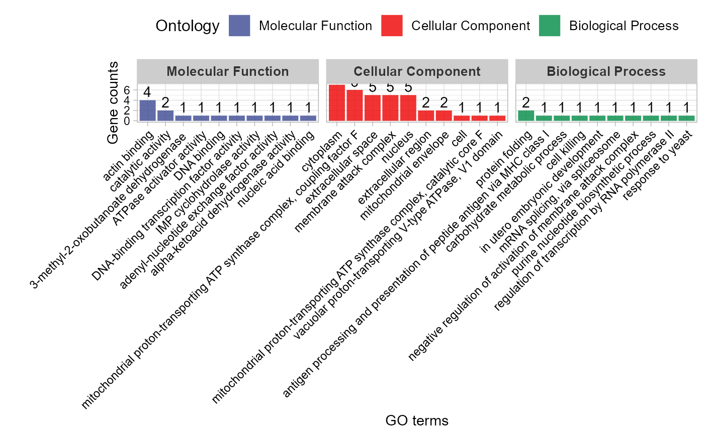
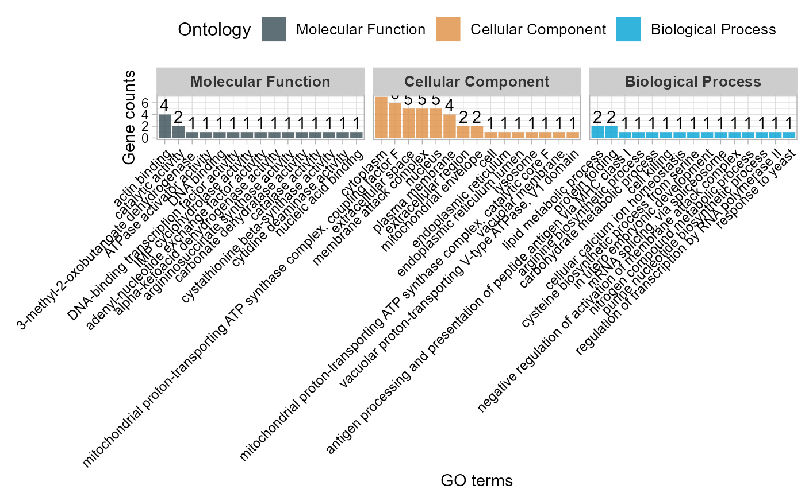

GO enrichment analysis and stat plot (None/Exist Reference Genome).
Source:R/go_enrich_stat.R
go_enrich_stat.RdGO enrichment analysis and stat plot (None/Exist Reference Genome).
Usage
go_enrich_stat(
go_anno,
go_deg_fc,
padjust_method = "fdr",
pvalue_cutoff = 0.5,
qvalue_cutoff = 0.5,
max_go_item = 15,
strip_fill = "#CDCDCD",
xtext_angle = 45,
sci_fill_color = "Sci_AAAS",
sci_fill_alpha = 0.8,
ggTheme = "theme_light"
)Arguments
- go_anno
Dataframe: include columns (id, biological_process, cellular_component, molecular_function), symbol ";" split GO terms.
- go_deg_fc
Dataframe: include columns (id, log2FC).
- padjust_method
Character: P-value adjust to Q-value. Default: "fdr" (false discovery rate), options: "holm", "hochberg", "hommel", "bonferroni", "BH", "BY", "fdr", "none".
- pvalue_cutoff
Numeric: P-value cutoff. Recommend: small than 0.05.
- qvalue_cutoff
Numeric: Q-value cutoff. Recommend: small than 0.05.
- max_go_item
Numeric: max BP/CC/MF terms. Default: 15, min: 1, max: NULL.
- strip_fill
Character: strip fill color (color name or hex value). Default: "#CDCDCD".
- xtext_angle
Numeric: x axis texts angle. Default: 45, min: 0, max: 360.
- sci_fill_color
Character: ggsci color pallet. Default: "Sci_AAAS", options: "Sci_AAAS", "Sci_NPG", "Sci_Simpsons", "Sci_JAMA", "Sci_GSEA", "Sci_Lancet", "Sci_Futurama", "Sci_JCO", "Sci_NEJM", "Sci_IGV", "Sci_UCSC", "Sci_D3", "Sci_Material".
- sci_fill_alpha
Numeric: ggsci fill color alpha. Default: 0.80, min: 0.00, max: 1.00.
- ggTheme
Character: ggplot2 themes. Default: "theme_light", options: "theme_default", "theme_bw", "theme_gray", "theme_light", "theme_linedraw", "theme_dark", "theme_minimal", "theme_classic", "theme_void"
Examples
# 1. Library TOmicsVis package
library(TOmicsVis)
# 2. Use example dataset
data(go_anno)
head(go_anno)
#> id
#> 1 gene_1
#> 2 gene_2
#> 3 gene_3
#> 4 gene_4
#> 5 gene_5
#> 6 gene_6
#> biological_process
#> 1 GO:0015986(ATP synthesis coupled proton transport)
#> 2 GO:0071236(cellular response to antibiotic);GO:0071493(cellular response to UV-B);GO:0008630(intrinsic apoptotic signaling pathway in response to DNA damage);GO:0010043(response to zinc ion)
#> 3 GO:0009058(biosynthetic process)
#> 4 GO:0006096(glycolytic process)
#> 5 <NA>
#> 6 GO:0006412(translation)
#> cellular_component
#> 1 "GO:0000276(mitochondrial proton-transporting ATP synthase complex, coupling factor F(o))"
#> 2 GO:0005737(cytoplasm)
#> 3 <NA>
#> 4 GO:0000015(phosphopyruvate hydratase complex)
#> 5 <NA>
#> 6 GO:0022625(cytosolic large ribosomal subunit)
#> molecular_function
#> 1 GO:0047624(adenosine-tetraphosphatase activity);GO:0015078(proton transmembrane transporter activity);GO:0016887(ATPase activity)
#> 2 "GO:0046872(metal ion binding);GO:0003680(AT DNA binding);GO:0008301(DNA binding, bending);GO:0042277(peptide binding);GO:0008270(zinc ion binding)"
#> 3 GO:0003824(catalytic activity)
#> 4 GO:0000287(magnesium ion binding);GO:0004634(phosphopyruvate hydratase activity)
#> 5 GO:0005319(lipid transporter activity)
#> 6 GO:0003723(RNA binding);GO:0003735(structural constituent of ribosome)
data(go_deg_fc)
head(go_deg_fc)
#> id log2FC
#> 1 gene_14 -1.20
#> 2 gene_15 1.25
#> 3 gene_16 1.30
#> 4 gene_17 1.35
#> 5 gene_18 -1.50
#> 6 gene_20 -1.55
# 3. Default parameters
go_enrich_stat(go_anno, go_deg_fc)
#> Warning: Expected 2 pieces. Additional pieces discarded in 9 rows [61, 157, 181, 222,
#> 441, 449, 454, 461, 468].
#> Warning: Removed 5 rows containing missing values (`geom_bar()`).
#> Warning: Removed 5 rows containing missing values (`geom_text()`).
# 4. Set padjust_method = "BH"
go_enrich_stat(go_anno, go_deg_fc, padjust_method = "BH")
#> Warning: Expected 2 pieces. Additional pieces discarded in 9 rows [61, 157, 181, 222,
#> 441, 449, 454, 461, 468].
#> Warning: Removed 5 rows containing missing values (`geom_bar()`).
#> Warning: Removed 5 rows containing missing values (`geom_text()`).
 # 5. Set max_go_item = 10
go_enrich_stat(go_anno, go_deg_fc, max_go_item = 10)
#> Warning: Expected 2 pieces. Additional pieces discarded in 9 rows [61, 157, 181, 222,
#> 441, 449, 454, 461, 468].

# 6. Set strip_fill = "#008888"
go_enrich_stat(go_anno, go_deg_fc, strip_fill = "#008888")
#> Warning: Expected 2 pieces. Additional pieces discarded in 9 rows [61, 157, 181, 222,
#> 441, 449, 454, 461, 468].
#> Warning: Removed 5 rows containing missing values (`geom_bar()`).
#> Warning: Removed 5 rows containing missing values (`geom_text()`).
# 7. Set sci_fill_color = "Sci_JAMA"
go_enrich_stat(go_anno, go_deg_fc, sci_fill_color = "Sci_JAMA")
#> Warning: Expected 2 pieces. Additional pieces discarded in 9 rows [61, 157, 181, 222,
#> 441, 449, 454, 461, 468].
#> Warning: Removed 5 rows containing missing values (`geom_bar()`).
#> Warning: Removed 5 rows containing missing values (`geom_text()`).

# 5. Set max_go_item = 10
go_enrich_stat(go_anno, go_deg_fc, max_go_item = 10)
#> Warning: Expected 2 pieces. Additional pieces discarded in 9 rows [61, 157, 181, 222,
#> 441, 449, 454, 461, 468].

# 6. Set strip_fill = "#008888"
go_enrich_stat(go_anno, go_deg_fc, strip_fill = "#008888")
#> Warning: Expected 2 pieces. Additional pieces discarded in 9 rows [61, 157, 181, 222,
#> 441, 449, 454, 461, 468].
#> Warning: Removed 5 rows containing missing values (`geom_bar()`).
#> Warning: Removed 5 rows containing missing values (`geom_text()`).
# 7. Set sci_fill_color = "Sci_JAMA"
go_enrich_stat(go_anno, go_deg_fc, sci_fill_color = "Sci_JAMA")
#> Warning: Expected 2 pieces. Additional pieces discarded in 9 rows [61, 157, 181, 222,
#> 441, 449, 454, 461, 468].
#> Warning: Removed 5 rows containing missing values (`geom_bar()`).
#> Warning: Removed 5 rows containing missing values (`geom_text()`).
